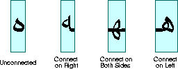
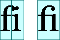
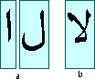
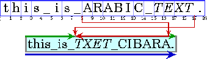
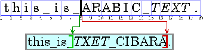
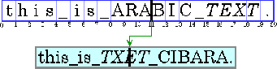
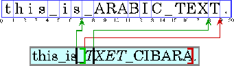
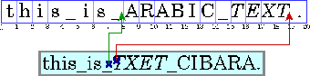
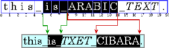
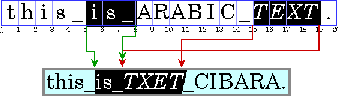

| CONTENTS | PREV | NEXT | Java 2D API |
Before a piece of text can be displayed, it must be properly shaped and positioned using the appropriate glyphs and ligatures. This process is referred to as text layout. The text layout process involves:
The information used to lay out text is also necessary for performing text operations such as caret positioning, hit detection, and highlighting.To develop software that can be deployed in international markets, text must be laid out in different languages in a way that conforms to the rules of the appropriate writing system.
A glyph is the visual representation of one or more characters. The shape, size, and position of a glyph is dependent on its context. Many different glyphs can be used to represent a single character or combination of characters, depending on the font and style.For example, in handwritten cursive text, a particular character can take on different shapes depending on how it is connected to adjacent characters.
In some writing systems, particularly Arabic, the context of a glyph must always be taken into account. Unlike in English, cursive forms are mandatory in Arabic; it is unacceptable to present text without using cursive forms.
Depending on the context, these cursive forms can differ radically in shape. For example, the Arabic letter heh has the four cursive forms shown in Figure 4-2.

Although these four forms are quite different from one another, such cursive shape-changing is not fundamentally different from cursive writing in English.In some contexts, two glyphs can change shape even more radically and merge to form a single glyph. This type of merged glyph is called a ligature. For example, most English fonts contain the ligature fi shown in Figure 4-3. The merged glyph takes into account the overhang on the letter f and combines the characters in a natural-looking way, instead of simply letting the letters collide.

Ligatures are also used in Arabic and the use of some ligatures is mandatory--it is unacceptable to present certain character combinations without using the appropriate ligature. When ligatures are formed from Arabic characters, the shapes change even more radically than they do in English. For example, Figure 4-4 illustrates how two Arabic characters are combined into a single ligature when they appear together.
In the JavaTM programming language, text is encoded using Unicode character encoding. Text that uses Unicode character encoding is stored in memory in logical order. Logical order is the order in which characters and words are read and written. The logical order is not necessarily the same as the visual order, the order in which the corresponding glyphs are displayed.The visual order for glyphs in a particular writing system (script) is called the script order. For example, the script order for Roman text is left-to-right and the script order for Arabic and Hebrew is right-to-left.
Some writing systems have rules in addition to script order for arranging glyphs and words on lines of text. For example, Arabic and Hebrew numbers run left to right, even though the letters run right to left. (This means that Arabic and Hebrew, even with no embedded English text, are truly bidirectional.)
A writing system's visual order must be maintained even when languages are mixed together. This is illustrated in Figure 4-5, which displays an Arabic phrase embedded in an English sentence.
Note: In this and subsequent examples, Arabic and Hebrew text is represented by uppercase letters and spaces are represented by underscores. Each illustration contains two parts: a representation of the characters stored in memory (the characters in logic al order) followed by a representation of how those characters are displayed (the characters in visual order). The numbers below the character boxes indicate the insertion offsets.

Even though they are part of an English sentence, the Arabic words are displayed in the Arabic script order, right-to-left. Because the italicized Arabic word is logically after the Arabic in plain text, it is visually to the left of the plain text.When a line with a mixture of left-to-right and right-to-left text is displayed, the base direction is significant. The base direction is the script order of the predominant writing system. For example, if the text is primarily English with some embedded Arabic, then the base direction is left-to-right. If the text is primarily Arabic with some embedded English or numbers, then the base direction is right-to-left.
The base direction determines the order in which segments of text with a common direction are displayed. In the example shown in Figure 4-5, the base direction is left-to-right. There are three directional runs in this example: the English text at the beginning of the sentence runs left to right, the Arabic text runs right to left, and the period runs left to right.
Graphics are often embedded in the flow of text. These inline graphics behave like glyphs in terms of how they affect the text flow and line wrapping. Such inline graphics need to be positioned using the same bidirectional layout algorithm so that they ap pear in the proper location in the flow of characters.
For more information about the precise algorithm used to order glyphs within a line, see the description of the Bidirectional Algorithm in The Unicode Standard, Version 2.0, Section 3.11.
Unless you are working with a monospace font, different characters in a font have different widths. This means that all positioning and measuring of text has to take into account exactly which characters are used, not just how many. For example, to right- align a column of numbers displayed in a proportional font, you can't simply use extra spaces to position the text. To properly align the column, you need to know the exact width of each number so that you can adjust accordingly.Text is often displayed using multiple fonts and styles, such as bold or italic. In this case, even the same character can have different shapes and widths, depending on how it is styled. To properly position, measure, and render text, you need to keep tr ack of each individual character and the style applied to that character. Fortunately, TextLayout does this for you.
To properly display text in languages such as Hebrew and Arabic, each individual character needs to be measured and positioned within the context of neighboring characters. Because the shapes and positions of the characters can change depending on the con text, measuring and positioning such text without taking the context into account produces unacceptable results.
To allow the user to edit the text that is displayed, you must be able to:
In editable text, a caret is used to graphically represent the current insertion point, the position in the text where new characters will be inserted. Typically, a caret is shown as a blinking vertical bar between two glyphs. New characters are inserted and displayed at the caret's location.Calculating the caret position can be complicated, particularly for bidirectional text. Insertion offsets on directional boundaries have two possible caret positions because the two glyphs that correspond to the character offset are not displayed adjacent to one another. This is illustrated in Figure 4-6. In this figure, the carets are shown as square brackets to indicate the glyph to which the caret corresponds.

Character offset 8 corresponds to the location after the _ and before the A. If the user enters an Arabic character, its glyph is displayed to the right of (before) the A; if the user enters an English character, its glyph is displayed t o the right of (after) the _.To handle this situation, some systems display dual carets, a strong (primary) caret and a weak (secondary) caret. The strong caret indicates where an inserted character will be displayed when that character's direction is the same as the base direction o f the text. The weak caret shows where an inserted character will be displayed when the character's direction is the opposite of the base direction. TextLayout automatically supports dual carets; JTextComponent does not.
When you're working with bidirectional text, you can't simply add the widths of the glyphs before a character offset to calculate the caret position. If you did, the caret would be drawn in the wrong place, as shown in Figure 4-7.

For the caret to be properly positioned, the widths of the glyphs to the left of the offset need to be added and the current context taken into account. Unless the context is taken into account, the glyph metrics won't necessarily match the display. ( The context can affect which glyphs are used.)
All text editors allow the user to move the caret with the arrow keys. Users expect the caret to move in the direction of the pressed arrow key. In left-to-right text, moving the insertion offset is simple: the right arrow key increases the insertion offs et by one and the left arrow key decreases it by one. In bidirectional text or in text with ligatures, this behavior would cause the caret to jump across glyphs at direction boundaries and move in the reverse direction within different directional runs. < p> To move the caret smoothly through bidirectional text, you need to take into account the direction of the text runs. You can't simply increment the insertion offset when the right arrow key is pressed and decrement it when the left arrow key is presse d. If the current insertion offset is within a run of right-to-left characters, the right arrow key should decrease the insertion offset, and the left arrow key should increase it.Moving the caret across a directional boundary is even more complicated. Figure 4-8 illustrates what happens when a directional boundary is crossed when the user is navigating with the arrow key. Stepping three positions to the right in the displayed text corresponds to moving to the character offsets 7, 19, then 18.

Certain glyphs should never have a caret between them; instead, the caret should move as though the glyphs represented a single character. For example, there should never be a caret between an o and an umlaut if they are represented by two separa te characters. (See The Unicode Standard, Version 2.0, Chapter 5, for more information.)TextLayout provides methods (getNextRightHit and getNextLeftHit) that enable you to easily move the caret smoothly through bidirectional text.
Often, a location in device space must be converted to a text offset. For example, when a user clicks the mouse on selectable text, the location of the mouse is converted to a text offset and used as one end of the selection range. Logically, this is the inverse of positioning a caret.When you're working with bidirectional text, a single visual location in the display can correspond to two different offsets in the source text, as shown in Figure 4-9.

Because a single visual location can correspond to two different offsets, hit testing bidirectional text isn't just a matter of measuring glyph widths until the glyph at the correct location is found and then mapping that position back to a character offset. Detecting the side that the hit was on helps distinguish between the two alternatives.You can perform hit testing using TextLayout.hitTestChar. Hit information is encapsulated in a TextHitInfo object and includes information about the side that the hit was on.
A selected range of characters is represented graphically by a highlight region, an area in which glyphs are displayed with inverse video or against a different background color.Highlight regions, like carets, are more complicated for bidirectional text than for monodirectional text. In bidirectional text, a contiguous range of characters might not have a contiguous highlight region when displayed. Conversely, a highlight region showing a visually contiguous range of glyphs might not correspond to a single, contiguous range of characters.
This results in two strategies for highlighting selections in bidirectional text:
- Logical highlighting --with logical highlighting, the selected characters are always contiguous in the text model, and the highlight region is allowed to be discontiguous. For an example of logical highlighting, see Figure 4-10.
- Visual highlighting--with visual highlighting, there might be more than one range of selected characters, but the highlight region is always contiguous. For an example of visual highlighting, see Figure& #160;4-11.


Figure 4-11 Visual Highlighting (contiguous highlight region)
Logical highlighting is simpler to implement, since the selected characters are always contiguous in the text.
Depending on which JavaTM APIs you use, you can have as little or as much control over text layout as you need:
- If you just want to display a block of text or need an editable text control, you can use JTextComponent, which will perform the text layout for you. JTextComponent is designed to handle the needs of most international applications a nd supports bidirectional text. For more information about JTextComponent, see "Using the JFC/Swing Packages" in the Java Tutorial.
- If you want to display a simple text string, you can call Graphics2D.drawString and let Java 2DTM lay out the string for you. You can also use drawString to render styled strings and strings that contain bidirectional text . For more information about rendering text through Graphics2D, see "Rendering Graphics Primitives".
- If you want to implement your own text editing routines, you can use TextLayout to manage text layout, highlighting, and hit detection. The facilities provided by TextLayout handle most common cases, including text strings with mixed fonts, mixed languages, and bidirectional text. For more information about using TextLayout, see "Managing Text Layout".
- If you want total control over how text is shaped and positioned, you can construct your own GlyphVectors using Font and then render them through Graphics2D. For more information about implementing your own text layout mechanism, see "Implementing a Custom Text Layout Mechanism".
Generally, you do not need to perform text layout operations yourself. For most applications, JTextComponent is the best solution for displaying static and editable text. However, JTextComponent does not support the display of dual c arets or discontiguous selections in bidirectional text. If your application requires these features, or you prefer to implement your own text editing routines, you can use the Java 2D text layout APIs.